¿Qué me gustó?
¿De qué me enamoré?
¿Será esa sonrisa
o serán esos ojos?
Yo no lo sé,
pero poco a poco
algo me atrapó.
Quizás, por fin,
vuelvo a empezar,
ya que en ti
mi paz puedo hallar.
Tal vez al inicio
no te pude hablar,
por mi timidez, quizás;
pero después de acercarme,
me di cuenta
de que no quiero alejarme.
What did I like?
What did I fall in love with?
Was it your smile,
or was it your eyes?
I do not know,
but little by little,
something about you caught me.
Maybe, at last,
I am beginning again,
because in you
I may find my peace.
Perhaps at first
I could not speak to you,
maybe because of my shyness;
but after getting closer,
I realized
I do not want to walk away.
